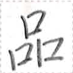

【集】
dat2
【集】
dat2


variants / 异体字 / 異体字
- 【聚】
occurrences / 出现次数 / 出現回数 : 29
Show all occurrences / 显示所有例句 / 全ての出現例を表示
「裁囲之字集意何？」「此意労而混混之囲行於無混混之意」
"xy1 pia2 a man1 dat2 xa2 nan2?" "ka1 xa2 naip2 ua ten1 ten1 a pia2 mok1 ie mun1 ten1 ten1 a xa2."
"What does the phrase 'tidy up the room' mean?" "It means 'to tackle a task to make a disordered room not disordered'." / "‘整理房间’这句话是什么意思？" "意思是‘花力气让凌乱的房间不再凌乱’。"
汝識来此処之字集乎？
mua2 can2 sak2 ka1 hue a man1 dat2 yn2?
Do you understand what is written here? / 你明白这里所写的吗？
与学人与於我等新字集。
tui2 nui2 cuk2 tui2 ie pai2 ge lu2 man1 dat2.
The teacher is teaching us some new words. / 老师教我们新单词。
十一集在於淮国。
nun1 et2 dat2 aim2 ie uep1 sip1.
There are eleven states in the Vefisait Republic. / 淮国有十一个州。
汝須学普使之字集。
mua2 ly nui2 huai2 sui1 a man1 dat2.
You need to learn some commonly used words. / 你需要学一些常用词汇。
我等地心集須筆我等之多族国之地心。
pai2 ge huep2 hia1 dat2 ly kua2 pai2 ge a taun1 nim2 sip1 a huep2 hia1.
We, the people of the Ministry of Culture, have to document the culture of our multi-ethnic nation. / 我们文化部必须记录我们多民族国家的文化。
連道集心生連水神加助処之道。
niek1 po1 dat2 hia1 ian1 niek1 nua2 tun2 at uaip2 hue a po1.
The Ministry of Transportation wants to make a road between Alinodia and Wipe-hua. / 交通部希望在水神和助处之间开辟一条道路。
筆民集積値終在於片之人。
kua2 bia1 dat2 xom1 mak2 ta aim2 ie zuo1 a cuk2.
The Ministry of Civil Affairs counted how many people lives in the district. / 民政部统计了有多少人住在该区。
大震壊終多家而戦行集助終人。
ma1 pit1 mot2 ta taun1 mut2 ua kaik mok1 dat2 uaip2 ta cuk2.
A large earthquake destroyed many houses and the Ministry of War and Disaster helped people. / 一场大地震摧毁了许多房屋，軍政部帮助人们。
定銭集定一星官使之銭値。
huap1 su1 dat2 huap1 et2 pet2 y1 sui1 a su1 mak2.
The Ministry of Finance decides how much money the government spends in a year. / 财政部决定政府一年要花多少钱。
人善集須識一日何値時人等労。
cuk2 kait dat2 ly can2 et2 kia1 nan2 mak2 kak cuk2 ge naip2.
The Ministry of Health needs to know how much time people work in a day. / 卫生部需要了解人们一天的工作时间。
享銭集助銭軸享銭。
sep su1 dat2 uaip2 su1 la1 sep su1.
The Ministry of Economic Affairs helps companies earn money. / 经济部帮助公司赚钱。
母等互集終而口物而互言。
mam1 ge huat1 dat2 ta ua iam1 ku ua huat1 zep1.
The mothers get together to eat and talk. / 母亲们聚在一起吃饭和交谈。
甘蜜虫須多之集来甘蜜。
tum1 sik2 li2 ly taun1 a dat2 sak2 tum1 sik2.
Honeybees are busily collecting honey. / 蜜蜂在勤劳的采蜜。
甘蜜虫在集来甘蜜於花。
tum1 sik2 li2 aim2 dat2 sak2 tum1 sik2 ie xuo1.
The bees are collecting honey from the flowers. / 蜜蜂正在采花蜜。
Words containing this character / 包含这个磷字的词语 / この燐字を含む語 :
| dat2 | 集 | noun | province | ||
| man1 dat2 | 字集 | noun | words | ||
| nui2 hi1 dat2 | 学友集 | noun | people in a class | ||
| naip2 dat2 | 労集 | noun | work team | ||
| dat2 | 集 | verb | to bring [something] together | ||
| kua2 bia1 dat2 | 筆民集 | noun | The Ministry of Civil Affairs | ||
| kaik mok1 dat2 | 戦行集 | noun | The Ministry of War and Disaster | ||
| sep su1 dat2 | 享銭集 | noun | The Ministry of Economic Affairs | ||
| xuo1 dat2 | 花集 | noun | bouquet | ||
| kaik dat2 | 戦集 | noun | army | ||
| dat2 | 集 | verb | for people to come together | ||
| huat1 dat2 | 互集 | verb | to get together |